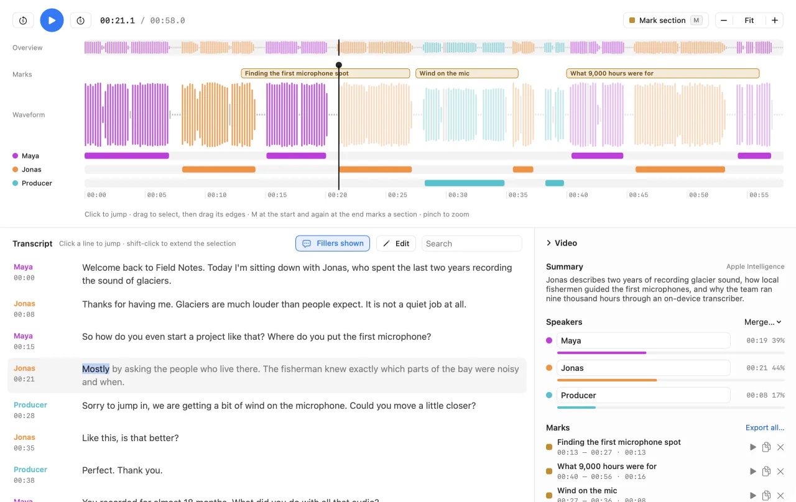
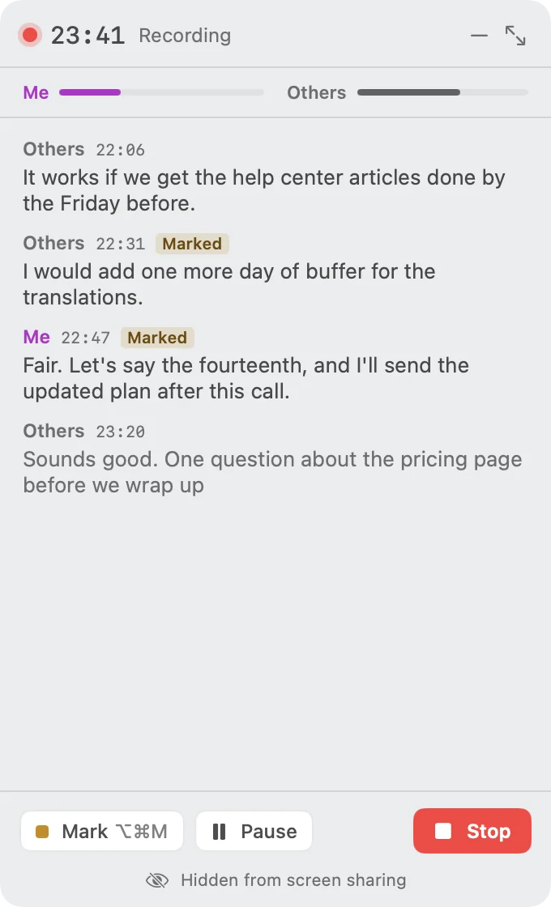
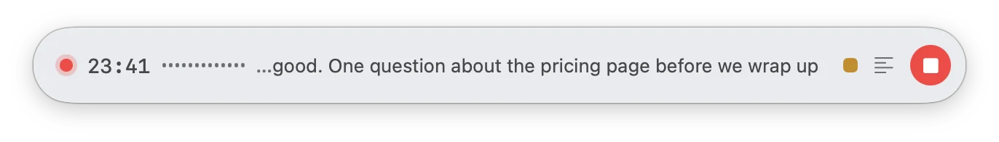

Who said what, when.
Drop in an interview, a podcast or a call. Murmur writes down every word, tells the voices apart and lays them out on a timeline you can play, mark and cut. Not a second of audio leaves your Mac.
Version 0.1.3 · macOS 26 or later · Apple silicon · Free
4 MB app. The speech models, 515 MB, download once on first launch.

Every word has a time and a voice.
Below are forty seconds of a recording with synthetic voices, exactly as Murmur transcribed them. Click a word to hear it. Marking works as in the app: once where a part starts, once where it ends, and it’s ready to copy.
Marks
A small window for the call you’re in.
Start a recording and Murmur keeps two tracks: your microphone as Me, and whatever your call app plays as Others. The transcript runs live in a compact window that stays on top.
- Invisible when you share your screen.
- The window doesn’t show up in the shared picture. Settings can change that.
- ⌥⌘M from any app.
- Marks the moment without leaving the call.
- Speakers when you stop.
- The other voices are told apart and the recording opens as a project, timeline and all.


Ten minutes of audio. About ten seconds.
Murmur doesn’t send your recording to a big model somewhere. It runs six small ones on your Mac, one after another. No account, no upload, no subscription.
- Decode0.6 s
- Language Ear1.5 s
- Words Voz1.7 s
- Speakers Who1.6 s
- Timing Align1.5 s
- Fillers Uhm3 s
Speech models by Desert Ant Labs. Voz is based on NVIDIA Parakeet TDT 0.6B v3. Loading a model sends an anonymous usage count to Desert Ant Labs for licensing. Your audio is never sent.
More of what Murmur does
- Fix words in place
- Type over a misheard word and Murmur re-times it against the audio, so highlights and cuts stay exact. Rename, merge and reassign speakers. Everything can be undone.
- Export
- Plain text, text with timestamps, Markdown, SRT, WebVTT, word-level JSON. Or audio and video clips: one file per mark, or all of them joined.
- Hide personal details
- Names, phone numbers, emails, addresses and IDs, hidden in the transcript, copies and exports. Exported audio clips get a tone over them.
- 25 languages
- Recognized from the sound, then checked against the words. For any other language Murmur offers Apple’s on-device transcriber.
- Fillers and noise
- Um and uh are found and left out of exports. Optional enhancement cleans up a noisy room for listening, transcribing and export.
- Titles and summaries
- Where Apple Intelligence is available, it names each project and writes a short summary, which exports can include.
- Projects, not copies
- A
.murmurfile points to your original audio or video instead of copying it, and finds it again if you move it. - Colors you can tell apart
- Nine speaker color schemes, including a color-blind safe one, each tested for contrast in light and dark.
Murmur 0.1.3
Free, for macOS 26 or later on Apple silicon. Notarized by Apple, and it updates itself.
Or build it
brew install xcodegen
git clone https://github.com/djui/murmur
cd murmur && make run